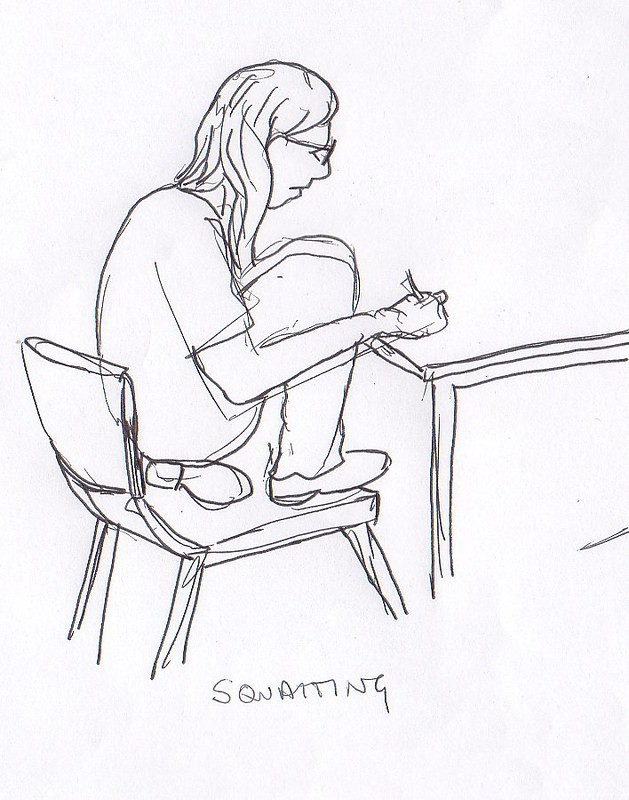

Managing your time
Welcome to my first blog post. Today we will be talking about time management. It is very important to manage your time, or deadlines will creep up on you before you know it. By prioritizing tasks, setting realistic goals, and breaking down larger projects into smaller, manageable steps, you can avoid the stress that comes with procrastination. Good time management not only helps you stay organized but also improves productivity and reduces anxiety. Let’s dive into some strategies that can help you make the most of your time.
How To prepare for exams

To pass exams, it's essential to be well-prepared and organized. Start by creating a study schedule that allows you to review
material regularly, rather than cramming at the last minute. Break your study sessions into manageable chunks and focus on understanding
key concepts rather than memorizing everything. Practice with past exam papers to familiarize yourself with the format and time constraints.
Stay healthy by getting enough sleep, eating well, and taking regular breaks. On exam day, manage your time wisely, read the questions
carefully, and stay calm to avoid unnecessary stress.